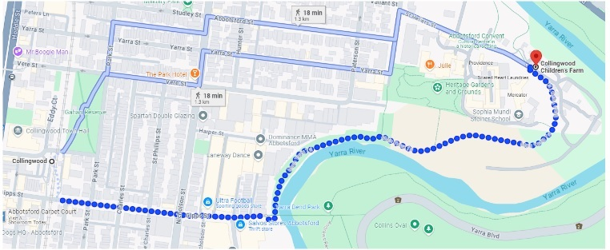

Artefact
An excursion to Collingwood Children’s Farm and Abbotsford Convent
Rationale
The reason this is titled “excursion” rather than listing the children’s farm as a location is because the journey to the site is the key aspect that this assignment will focus on. There are many opportunities for learning in sustainability at the Collingwood Children’s Farm, however, the focus for the subsequent lesson planning is that these locations are accessible by means other than direct car trip. The Collingwood Children’s Farm is just a 20-minute walk from Collingwood Station, which takes a route along the Yarra trail, a popular path for bicycle and pedestrian commuters. Hence, having lunch at the nearby Abbotsford Convent gardens, next to food shops and cafes, will highlight how good infrastructure provides carless access to their community and daily activities (such as work and shopping).
Grant et al. (2011) highlights that as concerns about increasing obesity rates, traffic congestion, and global warming grow, there is a rising focus on the need for more walkable environments. However, the shift towards creating cities that are less reliant on cars is a socio-political process often hindered by public disbelief and misunderstanding, as showcased by Melbourne’s failure to adhere to the walkability thresholds outlined by the World Health Organisation (Lowe, 2022). Many are reluctant to accept that scientifically validated urban design strategies, such as narrowing lanes, expanding sidewalks, providing solid public transport infrastructure, and offering enjoyable, encouraging bicycle routes like the Yarra River Trail, can lead to outcomes such as reduced pollution, decreased traffic congestion, and improved overall public wellbeing. Therefore, education plays a crucial role in informing our society about the significance of these sustainability measures.
Many children are excited by the novelty of travelling by train, and the Yarra River Trail is an idyllic walk along a flowing river filled with wildlife where children will observe many commuters enjoying their commute. This serves to highlight that this infrastructure is possible, enjoyable and serves as inspiration for the following inquiry where they will learn about the benefits to sustainability - both of the earth and human society and wellbeing.
The aim to take upper primary children on public trains is not without risk, which will be managed with appropriate adult supervision (both educators and parent/carer volunteers), allowing appropriate time to make it to the station with plenty of allowance to be ready to board the train as it arrives and notifying Public Transport Victoria of the excursion in advance. As with any excursion, individual school policy will inform many of the considerations.
Sequence overview
1. The excursion itself
2. CONNECT
- Review and discuss artworks including those that capture Urban sustainability (for example, see Ghostpatrol, AKA David Booth).
- During discussion, gather students’ ideas about how they might like to represent urban sustainability in their visual art. Some ideas include designing and drawing their own city or representing their journey on the Yarra trail.
- Explore visual arts practices as inspiration to create artworks that express different ideas and beliefs (VCAVAE029).
- Identify and describe how ideas are expressed in artworks by comparing artworks from different contemporary, historical and cultural contexts, including artworks by Aboriginal and Torres Strait Islander peoples (VCAVAR032).
- Identify different points of view on a contemporary issue relating to democracy and citizenship (VCCCC015).
3. INVENT
- Planning artistic response to the journey - utilising a creative environment pedagogy for safe exploration in expression and experimentation with materials.
- Make artworks in small group discussions, and highlight successes from students.
- Select and apply visual conventions, materials, techniques, technologies and processes specific to different art forms when making artworks (VCAVAV030).
- Create and display artwork considering how ideas can be expressed to an audience (VCAVAP031).
4 and 5. MAKE
- Students begin creating their artworks. Group discussion at the end to highlight some successes from students.
- Students finish creating their artworks.
- Select and apply visual conventions, materials, techniques, technologies and processes specific to different art forms when making artworks (VCAVAV030).
- Create and display artwork considering how ideas can be expressed to an audience (VCAVAP031).
6. REFLECT
- Gallery and discussion.
- Create and display artwork considering how ideas can be expressed to an audience (VCAVAP031).
- Investigate how people with shared beliefs and values work together to achieve their goals and plan for action (VCCCC016).
- Examine the concept of global citizenship (VCCCC017).
Download Lesson Plan PDF
Rationale
The Anthropocene has been characterised by the power of humans to entirely destroy the earth’s ecological system. Even with increasing awareness, there is still insufficient attention being given to issues such as climate change, carbon emissions and other sustainability crises (Gilbert et al., 2019). Gilbert et al. (2019) highlights this as an important role of educators to generate future attention to these issues and develop a society with the ability to solve the problems they will face. They also highlight that it is necessary to disrupt the pedagogical patterns and systems that have led to the issues that characterise the Anthropocene, lest we perpetuate the cycle. New pedagogies that highlight problem solving, investigation and open learning are needed to disrupt the “top-down” knowledge passing pedagogies of the past. The curriculum supports students to engage in complex ethical issues such as sustainability through its focus on skill development in areas of ICT, STEM and critical thinking (Department of Education [DET], 2019).
Inquiry-based learning is an excellent pedagogy for developing children’s inventive skills, critical thinking and habits of investigative learning. Furthermore, the arts encourage positive dispositions to learning, growth mindsets and increased creativity and engagement. This learning sequence aims to develop students with the necessary knowledge, skills, values and world views necessary to participate critically and creatively in determining more sustainable patterns of living, as outlined in VCAA’s (2015) cross-curriculum priority for sustainability. It also seeks for students to “investigate how people with shared beliefs and values work together to achieve their goals and plan for action (VCCCC016)” (VCAA, 2015), “Examine the concept of global citizenship (VCCCC017)” (VCAA, 2015), and “Create and display artwork considering how ideas can be expressed to an audience (VCAVAP031)” (VCAA, 2015), through the creation and exhibition of art with the intent to instigate consideration and discourse for sustainable living practices. Furthermore, the learning sequence draws on creative environment and intentional teaching pedagogies for reasons explored below.
The choice of visual art as the method for expressing their ideas and beliefs on sustainability was chosen for its accessibility, both in creation and interpretation (Dinham & Chalk, 2022). Furthermore, this sequence was designed with a choice of medium—watercolour, pen and coloured pencils—to allow for flexibility, choice, and variation with an undefined group of learners. However, this has been left deliberately vague as it could easily be modified to suit a group of learners who already had experience or interest in another medium.
In designing this learning sequence, I aimed to exemplify Dinham’s (2022) artistic learning processes: invent, make, connect and reflect. The beginning of the approach highlights to students that we are going to be learning about sustainability in urban settings and responding to our learning through the art we create. This approach, over that with the primary focus on creating the art, allows for children to imaginatively interpret the information and shift the emphasis on the design process to the child’s imaginative invention (Dinham, 2022).
The second lesson is focussed on providing students with access to knowledge and resources to develop a repertoire of visual arts techniques, form and compositional ideas to draw on while they plan and create their own work. The focus on learning through experimentation and investigation develops the students’ investigative skills, growth mindsets and positive dispositions towards learning, while providing the time needed to develop their artistic skills that will enhance their ability